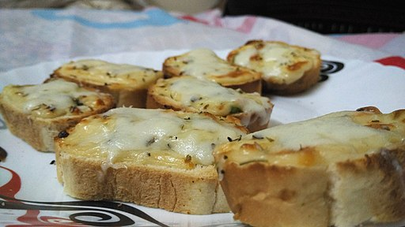

Garlic Bread with Cheese

This Garlic bread recipe is super simple and made with delicious french bread
I am excited to share with you a secret ingredient that gives your bread a little extra something.
See if you can spot it below, then check out my pro tips, how to freeze it to bake another day, reheating instructions, etc. Enjoy!
How to make it
Ingredients
- 1 loaf french bread
- 1 stick salted butter
- 6 cloves garlic
- 1/4 cup italian salad dressing
- 3 cups shreddeed mozzarella cheese
- Fresh parsley
How to make it
- Preheat oven to 350°
- Combine butter, garlic, Italian salad dressing, and 1 cup mozzarella cheese in a large bowl until well incorperated.
- Slice the french bread in half lengthwise and spread the top of each half with equal amounts of garlic butter
- Place the halves on a baking sheet, butter side up. Top with Parmesan cheese, then with the remaining mozzarella.
- Bake for 10 minutes, until the cheese is melted.
- Increase the heat to 450° and bake for up to 8 additional minutes, until the top begins to brown. Keep an eye on it during this time.
- Remove and cut into 1-inch slices. Garnish with parsley and serve with pasta, soup, or homemade marinara sauce.